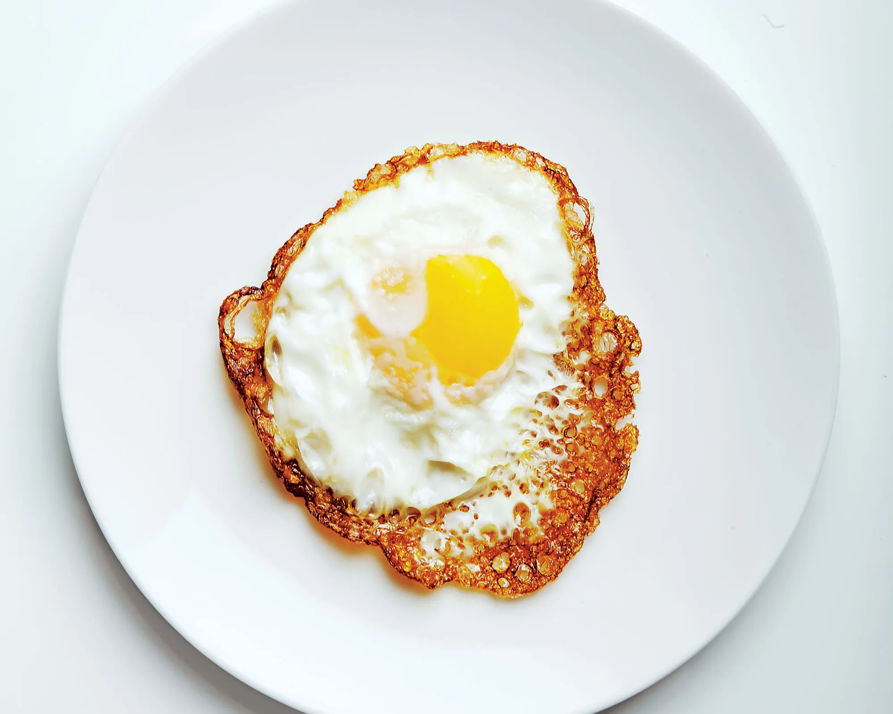

Fried Egg

The absolute best fried egg with crispy, golden edges and a perfectly runny yolk for sunny side
up or medium-hard yolk for over easy.
Ingredients
- 1 large fresh egg
- 1/2 tablespoon butter
- Flaky sea salt , for serving
- Freshly ground black pepper , for serving
Steps
- Crack an egg in a small ramekin and place it near the stove.
- Warm an 8-inch cast iron skillet over medium-high heat until
its hot enough that a drop of water sizzles rapidly on contact.
- Reduce heat to medium and add in the butter, moving it around to coat the pan.
- Gently pour the egg into the center of the pan (and watch out for splatters.)
- Let the egg cook until the edges are crisp and golden and egg white is opaque,
but the yolk is still runny, 2 to 2 1/2 minutes.
- Transfer the cooked egg to a plate.Sprinkle with flaky sea salt and a couple
turns of freshly ground black pepper, if desired.